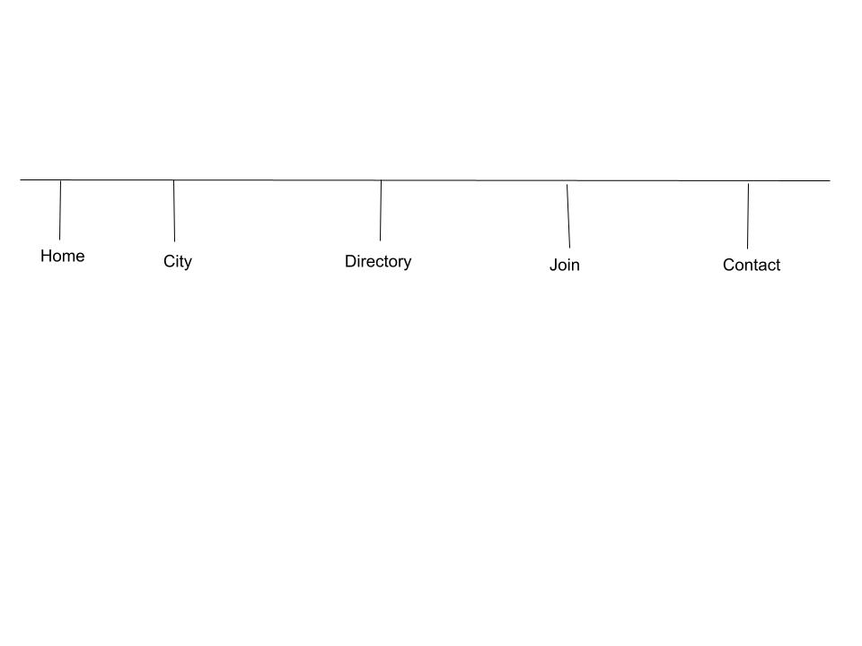

Planning document for the website for the Mesa, Arizona Chamber of Commerce: mesachamber.org
Site Plan
Site Description
The purpose of this document is to describe the plan for website of the Mesa, Arizona Chamber of Commmerce. The purpose of the website, its intended audience, utilization scenarios, and other aspects such as its organization and structure, elements of style, etc.
Site Name
The site will be called mesachamber.org. As the name implies, the website is intended provide access to the main information and digital collaboration functions of the Mesa, Arizona Chamber of Commerce.
Purpose Statement
The main purpose of the website will be to help Mesa, Arizona businesses and organizations make profitable connections and to promote business in Mesa, Arizona.
Target Audience
The target audience of the SOAtheory.com web site is described below:
- Who: Businesses, Entrepeneurs, Non-Profit Organizations, Job Agencies, Community Oranizers, and especially the Hospitality and Tourism Industry.
- Age: 17 to 100
- Technology: Computers and Mobile devices with a strong emphasis on tablets and smartphones.
- Income: Income levels will typicaly be between $60,000 and above annually.
- Motivation: Support local business and organizations, with a special emphasis on highlighting local attactions.
Personas
Kailei Shelley
- Occupation:Program Director, nonprofit
- Demographics and Education:38 years old. Master's in Community Organization
- Goals and motivation for using the site:Learn how about how the Chamber of Commerce can help her to network with businesses and other non-profit organizations to further her nonprofit's work.
- Social:Very active individual, highly involved in the community. Loves servving other people.
- TechnologyUses an all-in-one comptuer tablet and mobile to keep up with communication tasks while on the move.
- Quote:"My job is to help people who want to serve connect with people who need service. This provides fulfillment to those who serve and invaluable service to those who need it most."
Marion Hillman
- Occupation:CEO, local hotel alliance.
- Demographics and Education:51 years old. Master's in Business Administration
- Goals and motivation for using the site:Gain access to the Chamber's resouces such as: newsletters, marketing research, referral reports, advertising opportunites, events, etc.
- Social:Very analytical individual. Focused on career advancement and profit maximisation.
- TechnologyDeploys top-shelf technology solutions throughout the business. Mostly uses a tablet while on the go.
- Quote:"A rising tide lifts all ships. It is important to make Mesa an attractive place to visit and do business"
Scenarios
- What can the Chamber of Commerce do for me and my company or organization?
- What resources and netorking opportunites are available?
- What business services are available through the directory?
- Why should I open a business or plan an event in Mesa, Arizona?
Content Architecture
Content List
This section describes how each of the scenarios identified in the previous section will be met, through providing appropriate and well organized content.
What can the Chamber of Commerce do for me and my company or organization?- On the HOME page, a description of the chamber and its goals. On the JOIN page, a detailed list of the various service tiers.
- On the JOIN page, a detailed list of the various service tiers. On the directory page, some local business in this category.
- A good DIRECTORY page
- On the HOME page, an engaging description and images of Mesa, an upcoming events section.
Site Map
This section describes the basic structure of the mesachamber.org website
Style Guide
This section describes the visual and aesthetic plan for the mesachamber.org web site.
Color Scheme
- Primary Background Color: #FFFFFF
- Menu/Navigation Background Color: #BD2035
- Main Content Area Background Color: #E47D1E
- Contact Info/Footer Background Color: #0070B9
- Primary Trim: #6B6876
- Secondary Trim: #A7A6AE<.li>
Typography
The site will use Merriweather Font
Navigation
The site will use a common header and navigation bar. Navigation will sit near the top of the page, between the header and the main elements. It will have the following characteristics:
- As shown in the color scheme section of this document the background color will be the red from the mesa logo and the text color will be black when the link is not active
- When the link is active the background color will change to black, with white text
Responsiveness
This section contains examples describing the layout of the website for the various formats supported.